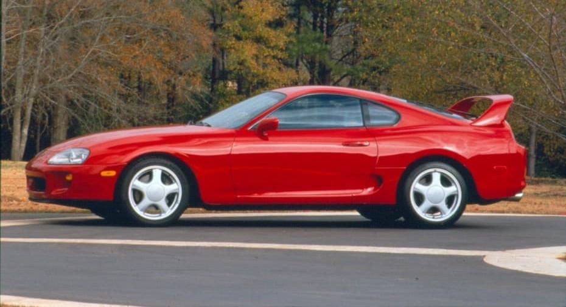

Mis Autos Favoritos
-->
-
Porsche 911 Carrera
- Motor: Bóxer 6 cilindros
- Potencia: ~385 HP
- Ícono de diseño y rendimiento alemán desde los años 60. Su silueta es reconocible al instante y ha dominado tanto en pista como en carretera.
-
Nissan Skyline GT-R (R34)
- Motor: RB26DETT 6 cilindros en línea, twin turbo
- Potencia: ~385 HP
- Apodado “Godzilla” por su dominio en carreras. Tecnología avanzada como tracción total ATTESA y sistema HICAS lo hicieron legendario.
-
Subaru Impreza WRX STI
- Motor: Bóxer turbo 4
- Potencia: ~310 HP
- ampeón del rally mundial. Su tracción integral y carácter agresivo lo convirtieron en el favorito de los fanáticos del off-road y drifting.
-
Nissan 350Z
- Motor: V6 atmosférico
- Potencia: ~280 HP
- Deportivo accesible con alma de pura sangre. Su diseño y sonido lo hicieron popular entre los entusiastas y en la cultura del tuning.
-
Toyota Supra MK4
- Motor: 2JZ-GTE 6 cilindros en línea, twin turbo
- Potencia: ~320 HP
- Famoso por su motor indestructible y por su papel en “Rápido y Furioso”. Es una leyenda del tuning y de los 90.

-
Mitsubishi Lancer Evolution IX
- Motor: 4 cilindros turbo (2.0L)
- Potencia: ~286 HP
- tracción integral y alma de rally, el Evo IX es famoso por su precisión en curvas y aceleración brutal. Fue rival directo del Subaru WRX STI y estrella en “Tokyo Drift”.
-
Mazda RX-7 (FD)
- Motor: Rotativo Wankel twin turbo
- Potencia: ~276 HP
- Ligero, ágil y con un diseño aerodinámico único. Su motor rotativo lo hizo diferente a todo lo demás. Ícono del drifting y protagonista en “Rápido y Furioso”.